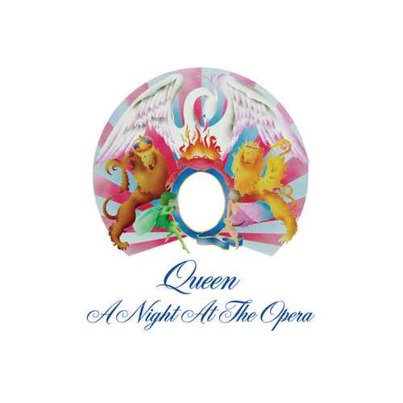

Se invirtió mucho tiempo para experimentar en el próximo álbum, probando las distintas sonoridades que se podían crear. En ese momento Freddie Mercury prodújo, tocó el piano y cantó los coros para un sencillo de Eddie Howell, con un sonido similar a Queen. Hubo un punto de ruptura entre Trident y Queen, lo que provocó que cancelasen una gira por Estados Unidos que estaba prevista, para precisamente resolver los problemas. Queen firmó un acuerdo independiente, pero directamente con EMI y Elektra. El grupo se encontraba momentáneamente sin gerente. En la búsqueda, surgieron varios candidatos: Peter Grant de Led Zeppelin -la idea era que su discografía, Swan Song Records produjera al
grupo-, Peter Rudge -con quien no pudieron contactar- y el mánager de Elton John, John Reid. En un principio, Reid no se encontraba seguro si podría con otro artista musical más, pero cambió rápidamente de idea cuando se enteró de que se trataba de Queen. Reid puso cien mil libras para resolver el acuerdo, además de nombrar como abogado a Peter Beach para negociar el contrato existente con Trident, el acuerdo con aquella discográfica se disolvió en 1975.
Queen realizó su primer video con "Bohemian Rhapsody", que costó 4500 libras. Es considerado el primer corte con un verdadero video clip, siendo registrado por cinta de vídeo, en lugar de fílmico. Recurrentemente es considerada como la mejor canción de la historia, su videoclip a su vez, es elegido también como el mejor. "Bohemian Rhapsody" se grabó en tres semanas, se usaron riffs de heavy metal como sobregrabaciones vocales. Puesto en sencillo en noviembre de 1975, fue su primer número uno en el Reino Unido, estuvo dieciocho meses en lista, rompiendo el récord de Paul Anka había mantenido desde 1957 con "Diana". Además, fué número nueve en los Estados Unidos, significando un importante avance. Otra vez, Queen reinaba en las encuestas musicales, otra vez Mercury ganó el Premio Ivor Novello, en esta ocasión fue por "Bohemian Rhapsody", corte que iba vendiendo un millón de copias solo en el Reino Unido.

Publicaron el 21 de noviembre de 1975 el álbum A Night at the Opera, siendo el álbum más costoso nunca antes producido. Al igual que su antecesor, este nuevo trabajo de Queen experimenta con el sonido estereofónico. Se usaron múltiples capas de guitarra de su antecesor como base, el álbum experimenta con diversos géneros como el metal de "Death on Two Legs" y "Sweet Lady", el pop de "You're My Best Friend", también hay un espacio de música campestre en "Lazing on a Sunday Afternoon" y "Seaside Rendezvous", y rock progresivo en "'39" y "The Prophet's Song". Todos estos elementos se conjuntan para la pista pseudo ópera que se encuentra casi al final del álbum, "Bohemian Rhapsody". El álbum tiene alguna similitud con Led Zeppelin IV. En resumen, el álbum terminó siendo bastante experimental y con un ligero toque de humor.
La primera canción del álbum, "Death On Two Legs (Dedicated To...)", fue compuesta por Freddie Mercury, está "dedicada" al exmánager de la banda, Norman Sheffield, uno de los dueños de su anterior discográfica, Trident. La canción describe un duro retrato describiendo la animosidad de la banda con su antiguo representante. Pero en realidad la canción no da nombres, el título aparece "Dedicado a...". Solo se supo que estaba escrita sobre Sheffield cuando este presentó una demanda contra Queen. La misma no tuvo efecto, ya que la canción no es explícita hacia persona alguna. Se editó el 18 de mayo de 1976 el sencillo "You're My Best Friend", obra del bajista Deacon; se trata de una canción pop, además de ser la primer canción de Deacon. Alcanzó el puesto n.º 7 y 16 en las listas británicas y estadounidenses respectivamente. En "The Prophet's Song", una canción de ocho minutos, la sección central es un canon, con frases simples en capas para crear un amplio espectro de coros.
El lado cierra con la versión que May realiza del himno británico que anteriormente ya venía culminando los recitales en vivo. A Night at the Opera representó el comienzo de la auténtica masividad pues alcanzó el n.° 1, manteniéndose en las listas británicas por 50 semanas y el n.º 4 en Estados Unidos, lo que le permitió obtener certificación de oro, que alcanzó a platino en 2002.
Casualmente el lado B del sencillo es ocupado por el siguiente tema del álbum: "'39", un country/folk escrito por Brian May, en el cual narra un viaje espacial que hace alusión a la teoría que postula que si alguien viajara a velocidades cercanas a la luz, cuando este retornara a la tierra para el viajante solo habría pasado muy poco tiempo, mientras que para los que se quedaron en el planeta ya habrían pasado generaciones (se debe tener presente en este punto los estudios de astronomía por parte de su autor, Brian May). El lado B se inicia con la extensa (8 minutos con 20 segundos) "The Prophet's Song" de Brian May. Para su grabación utiliza un toy koto, instrumento de cuerdas japonés. En la mitad de la canción se produce un corte donde surge un intrincado juego de voces sobregrabadas. "Love of My Life" de Mercury es la balada del disco, se usó un arpa y armonías vocales. Para ella Brian May recurre a un arpa. "Good Company", autoría del guitarrista, es un charleston donde de modo magnífico Brian May recrea una banda de dixieland con todos sus instrumentos solo a partir de los sonidos de su guitarra, grabada en varios tracks.
En 1975 concluye con un show grabado por la BBC en el Hammersmith Odeon. El siguiente año comienza con una gira por Japón, Australia y finalmente Estados Unidos. "Bohemian Rhapsody" ha sido elegida, muchas veces, como la mejor canción de todos los tiempos. La banda decidió hacer un vídeo como apoyo para el sencillo; el resultado en general es considerado como el primer "verdadero" vídeo musical en producirse. Aunque otras bandas (incluyendo The Beatles), habían hecho con anterioridad algunos cortos filmes promocionales o vídeos de canciones, generalmente fueron realizados para presentaciones específicas o programas de televisión (tales como los vídeos de The Beatles para "Hey Jude" y "Revolution", los cuales fueron hechos específicamente para ser emitidos en el programa televisivo Smothers Brothers).
El álbum alcanzó el puesto n.º 4, pero además, alcanzó la certificación de triple platino. En 2003, fue ubicado en el puesto n.º 230 de la lista de los 500 mejores álbumes de todos los tiempos de la revista Rolling Stone, este descenso del álbum fue muy criticado a la publicación estadounidense, ya que en la mayoría de encuestas se lo ubica en una posición superior. Luego de este trabajo, el grupo quedó establecido en la cima del estrellato. Emprendieron su tercera gira por Estados Unidos el 20 de enero de 1976, el primer recital fue el 27 de enero en Connecticut. Queen lleva consigo un nuevo mánager, llamado Gerry Stickells quien organiza otras giras de Queen.
Durante septiembre de 1976 el grupo hizo una pequeña gira por el Reino Unido que concluyó el 18 de septiembre (sexto aniversario de la muerte de Jimi Hendrix), con un recital gratuito en el Hyde Park londinense ante 150 mil personas. Este evento colapsó el transporte público. El show no fue completado debido a que la policía apagó la electricidad general del predio, al considerar que era demasiado tarde (fue el primer recital nocturno en el parque que antes había alojado a The Rolling Stones en 1969). Los 150 mil espectadores tuvieron muchas dificultades para encontrar la salida. El recital fue transmitido por Capitol Radio. También fue filmado, pero la película se deterioró, imposibilitando su publicación. Luego del concierto la banda decidió emprenderse en producir un nuevo álbum, pero en esta ocasión, sin la mano de Roy Thomas Baker. Aquella separación se produjo en términos amistosos, y en noviembre de 1976, se editó el sencillo avance del próximo álbum, "Somebody to Love", el vídeo muestra fragmentos del concierto en el Hyde Park.
 Queen.png) Tras firmar, Trident le ofrece al grupo un nuevo sistema de grabación y nuevos instrumentos. Brian May optó por conservar su guitarra casera. Ellos llamaron a Jack Nelson como gerente, él ya había dado consejos al grupo en el pasado. Nelson llegó a mostrar las cintas de los demos de Queen a EMI, pero la negociación no funcionó. A pesar de que no había aparecido ninguna empresa para distribuir el disco de Queen, el conjunto, inauguró el Sheffield de 24 pistas para grabar su primer álbum. Pero solo se les concedió aquellos espacios de tiempo cuando nadie estaba, dando como resultado grabaciones producidas de manera casual, sobre todo en horas de la madrugada o la mañana, cuando nadie se encontrase grabando. El grupo estuvo involucrado en cada detalle de la elaboración del álbum. La producción de la contratapa es un collage de fotos. Los miembros de Queen habían llamado a sus amigos para que en torno de Mercury, seleccionaran las mejores fotos. Mercury y May pasaron algunas semanas pegando fotos. En tanto a la portada del álbum, quién realizó la captura fue el fotógrafo Doug Puddifoot, también había tomado muchas fotos usadas en el collage. La tapa tiene a Freddie Mercury en el escenario con su característico micrófono. El efecto púrpura se logró tan solo colocando un celuloide de aquel color en el lente de la cámara. El álbum debut estaba influenciado por el rock progresivo y el heavy metal de ese momento.
Tras firmar, Trident le ofrece al grupo un nuevo sistema de grabación y nuevos instrumentos. Brian May optó por conservar su guitarra casera. Ellos llamaron a Jack Nelson como gerente, él ya había dado consejos al grupo en el pasado. Nelson llegó a mostrar las cintas de los demos de Queen a EMI, pero la negociación no funcionó. A pesar de que no había aparecido ninguna empresa para distribuir el disco de Queen, el conjunto, inauguró el Sheffield de 24 pistas para grabar su primer álbum. Pero solo se les concedió aquellos espacios de tiempo cuando nadie estaba, dando como resultado grabaciones producidas de manera casual, sobre todo en horas de la madrugada o la mañana, cuando nadie se encontrase grabando. El grupo estuvo involucrado en cada detalle de la elaboración del álbum. La producción de la contratapa es un collage de fotos. Los miembros de Queen habían llamado a sus amigos para que en torno de Mercury, seleccionaran las mejores fotos. Mercury y May pasaron algunas semanas pegando fotos. En tanto a la portada del álbum, quién realizó la captura fue el fotógrafo Doug Puddifoot, también había tomado muchas fotos usadas en el collage. La tapa tiene a Freddie Mercury en el escenario con su característico micrófono. El efecto púrpura se logró tan solo colocando un celuloide de aquel color en el lente de la cámara. El álbum debut estaba influenciado por el rock progresivo y el heavy metal de ese momento.
 Sheer Heart Attack.png) Salió a la luz el primer resultado el 11 de octubre de 1974 siendo la publicación del sencillo "Killer Queen"/"Flick of the Wrist", ambas canciones bajo la autoría de Mercury. El sencillo fue disco de plata, había alcanzado el puesto n.º 2 en las listas inglesas, manteniéndose allí por doce semanas. Fue el primer corte en entrar a las listas estadounidenses, alcanzando el puesto n.º 12. Casi tres semanas después, el 1 de noviembre, se lanza el álbum Sheer Heart Attack, segundo disco del año 1974 (publicado unos meses después de Queen II). Sheer Heart Attack llegó al puesto n.º 2 en las listas inglesas, quedándose allí por 42 semanas. Luego de la edición del disco, salió al mercado el 17 de enero de 1975 el sencillo "Now I'm Here"/"Lily of the Valley", se mantuvo en las listas británicas durante 7 semanas alcanzando el puesto n.º 11. La tercer entrega de Queen fue considerada mejor que sus antecesores. Fue su primer disco de oro en los Estados Unidos, siendo además el primer álbum exitoso en ambos lados del Atlántico.
Salió a la luz el primer resultado el 11 de octubre de 1974 siendo la publicación del sencillo "Killer Queen"/"Flick of the Wrist", ambas canciones bajo la autoría de Mercury. El sencillo fue disco de plata, había alcanzado el puesto n.º 2 en las listas inglesas, manteniéndose allí por doce semanas. Fue el primer corte en entrar a las listas estadounidenses, alcanzando el puesto n.º 12. Casi tres semanas después, el 1 de noviembre, se lanza el álbum Sheer Heart Attack, segundo disco del año 1974 (publicado unos meses después de Queen II). Sheer Heart Attack llegó al puesto n.º 2 en las listas inglesas, quedándose allí por 42 semanas. Luego de la edición del disco, salió al mercado el 17 de enero de 1975 el sencillo "Now I'm Here"/"Lily of the Valley", se mantuvo en las listas británicas durante 7 semanas alcanzando el puesto n.º 11. La tercer entrega de Queen fue considerada mejor que sus antecesores. Fue su primer disco de oro en los Estados Unidos, siendo además el primer álbum exitoso en ambos lados del Atlántico.
 A finales de 1979 lanzaron el primer sencillo del álbum The Game, "Crazy Little Thing Called Love" otro nº 2 que permaneció en cartel por catorce semanas, fue el primer corte del álbum, tiene un estilo rockabilly como Elvis Presley. Fue todo un éxito, cosechando su tercer álbum n. 1 en el Reino Unido, además de ser su primer disco de oro estadounidense e ingresando por 7 semanas en las listas ARIA de Australia. En diciembre de 1979 Queen tocó como banda de apertura en el Concerts for the People of Kampuchea en Londres, después de haber aceptado una solicitud por el organizador del evento, Paul McCartney. En ese evento asistieron grupos como The Clash, The Pretenders, The Who y Elvis Costello. Cuando "Crazy Little Thing Called Love" era interpretada en vivo, Freddie Mercury tocaba la guitarra rítmica, al igual que en la grabación de estudio.
A finales de 1979 lanzaron el primer sencillo del álbum The Game, "Crazy Little Thing Called Love" otro nº 2 que permaneció en cartel por catorce semanas, fue el primer corte del álbum, tiene un estilo rockabilly como Elvis Presley. Fue todo un éxito, cosechando su tercer álbum n. 1 en el Reino Unido, además de ser su primer disco de oro estadounidense e ingresando por 7 semanas en las listas ARIA de Australia. En diciembre de 1979 Queen tocó como banda de apertura en el Concerts for the People of Kampuchea en Londres, después de haber aceptado una solicitud por el organizador del evento, Paul McCartney. En ese evento asistieron grupos como The Clash, The Pretenders, The Who y Elvis Costello. Cuando "Crazy Little Thing Called Love" era interpretada en vivo, Freddie Mercury tocaba la guitarra rítmica, al igual que en la grabación de estudio.